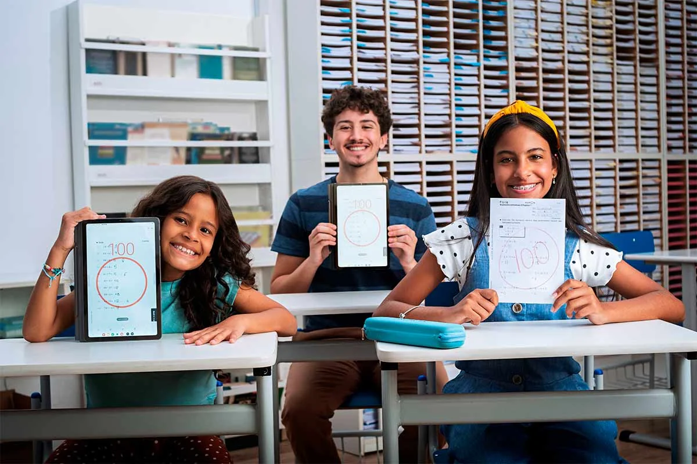
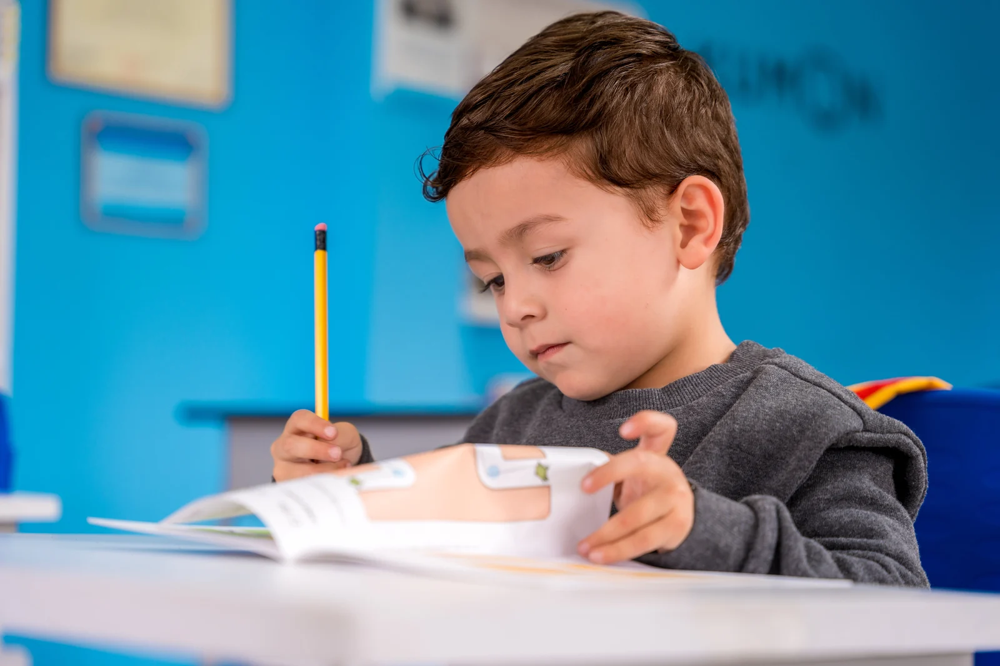

Avaliação inicial
Identificamos o nível atual e as necessidades do aluno.
Avaliação inicial gratuita em Guarulhos
Descubra o nível atual do aluno e conheça um plano individual para desenvolver autonomia, concentração e segurança nos estudos.
Gratuita, individual e sem compromisso de matrícula.

Nossa unidade
Na unidade Vila Flórida, o acompanhamento respeita o momento de cada estudante. A orientação próxima ajuda a criar uma rotina consistente, celebrar conquistas e transformar desafios em novos passos.
Quer entender como isso funcionaria para o seu filho?
A avaliação gratuita ajuda a encontrar o ponto de partida adequado.
Como funciona
O aluno começa onde se sente seguro e avança à medida que consolida cada habilidade.
Identificamos o nível atual e as necessidades do aluno.
Definimos o ponto de partida adequado para o estudante.
Criamos constância com atividades curtas e planejadas.
Acompanhamos o progresso e os próximos desafios.
O Kumon na prática
Cursos
Desenvolve lógica, agilidade nos cálculos e concentração.

Da alfabetização à leitura crítica, amplia interpretação, vocabulário e escrita.
Aprendizado progressivo de leitura, compreensão e pronúncia.
A essência do método
Na avaliação gratuita, identificamos um ponto de partida confortável para que o estudante conquiste confiança e avance gradualmente.
Quero descobrir o ponto de partidaPara quem é
Para construir bases e recuperar a segurança.
Para quem está pronto para avançar.
Para desenvolver disciplina e independência.
Depoimentos
Experiências compartilhadas por responsáveis e visitantes.
“A coordenadora Tainá e sua equipe é maravilhosa! Sempre trazendo melhorias para a unidade. Prestando atenção na individualidade/particularidade de cada aluno, para que possamos nos desenvolver de maneira eficaz. Faço Kumon com meu filho que já está na unidade a cinco anos. Hoje com 11 anos já é autodidata e está avançado a série escolar dele!”Gerusa LauxAvaliação pública no Google · há 3 anos
“Amei conhecer essa unidade, o ambiente é amplo, limpo, bem iluminado e silencioso. Bastante aconchegante e propício ao estudo. Além do ambiente gostoso, a orientadora Tainá e sua equipe são bem atenciosos e se aproximam dos alunos de forma a ajudá-los a entender a metodologia e colocar em prática. Recomendo essa unidade!”Eduardo MenezesAvaliação pública no Google · há 3 anos
“Meu filho faz Kumon nesta unidade e estou muito satisfeita! O método ajuda muito no desenvolvimento e disciplina dos estudos, e a equipe é sempre muito atenciosa e dedicada com as crianças. Só tenho a agradecer pelo cuidado e incentivo com os alunos.”Adriele Ribeiro DantasAvaliação pública no Google · há 4 meses
“São espetaculares, minha pequena tem 9 anos e não sabia ler, em 3 meses já começou ler palavras, em 4 meses já conseguiu ler frases, agora está em mais um desafio que é interpretar, obrigada pelo apoio e carinho. Indico de olhos fechados. Gratidão eterna :)”Fernanda SastreAvaliação pública no Google · há 1 ano
Perguntas frequentes
Não encontrou sua pergunta? Fale diretamente com a unidade.
Conversar pelo WhatsApp →A indicação depende da avaliação individual e do desenvolvimento do aluno. Os materiais começam por atividades de coordenação motora e pré-alfabetização, permitindo um ponto de partida adequado também para os pequenos.
Ela identifica conhecimentos já consolidados, ajuda a definir um ponto de partida confortável e permite que a família conheça a proposta da unidade.
O aluno frequenta a unidade duas vezes por semana, com duração de uma hora por matéria cursada. Os dias e horários são combinados com a unidade.
Sim. Nos demais dias, o aluno realiza pequenas atividades com duração média de 15 a 30 minutos. Essa constância ajuda a consolidar o hábito de estudos.
Sim. O material didático exclusivo do Kumon é fornecido gratuitamente ao aluno.
O Kumon trabalha uma sequência própria e individualizada. O aluno fortalece a base e pode avançar gradualmente até conteúdos acima da série escolar.
Comece pela avaliação gratuita. Depois de conhecer o nível atual e o plano sugerido, você poderá decidir com tranquilidade sobre a matrícula.
Sim. A avaliação inicial na unidade é gratuita e não exige compromisso de matrícula.
Onde estamos
Avaliação inicial gratuita
Conheça o nível atual do aluno, converse com a orientadora e entenda como o método pode ajudá-lo antes de decidir sobre a matrícula.